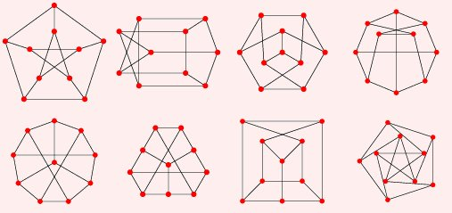

Graph Theory Lecture 4
Hamiltonian Cycles
A small change makes a big difference
A graph is eulerian Hamiltonian if there exists a closed walk that uses every edge vertex exactly once.
Determining whether a graph is Hamiltonian is hard
Specifically, it's NP complete
More complexity culture
A decision problem is NP complete if it's "as hard as any other NP problem".
If you had a fast algorithm to solve one type of NP-complete problem, you could use it solve any other NP-complete problem
No beautiful answer, but that doesn't mean we give up
- For any fixed size graph, only so many paths to check, can do every one.
- Can find special families of graphs where the answer is known/easy
- Can try to find general algorithms that do better
Easy reasons why a graph isn't be Hamiltonian:
- Vertices of degree 1
- "Cut vertices"
- Uneven bipartite graphs
The Petersen graph isn't Hamiltonian

Can prove this case by case. or...
Another way to prove a graph isn't Hamiltonian
- Assume it is draw the Hamiltonian cycle
- Where do the other edges go?
Outline for Petersen
- Draw the 10-cycle. Each vertex needs one more edge
- No short cycles, so every edge is opposite, or opposite $\pm 1$
- Can't all go directly across
- once we have one going $\pm 1$ we have a problem
Ore's theorem
Let $G$ be a simple graph with $n$ vertices, so that for any two nonadjacent vertives $v$ and $w$, we have
$$\textrm{deg}(v)+\textrm{deg}(w)\geq n$$
Then $G$ is Hamiltonian.
Rough outline
- A maximal counterexample will be semi-Hamiltonian
- If "small x" ($v_1v_i$ and $v_nv_{i-1}$) then Hamiltonian
- Pigeonhole principle: $n-2$ more edges, $n-3$ bins